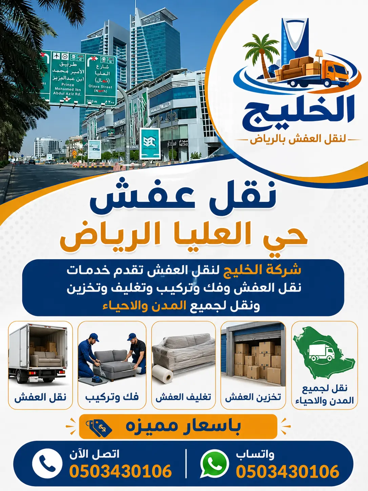

شركة الخليج لنقل العفش تقدم خدمات نقل الأثاث في حي العليا بالرياض بأعلى مستويات الجودة والاحترافية، حيث نوفر فك وتركيب الأثاث، تغليف العفش، تحميل وتنزيل الأثاث، ونقل جميع أنواع العفش باستخدام سيارات مجهزة للحفاظ على سلامة المنقولات أثناء عملية النقل.
فك وتركيب جميع أنواع الأثاث باحترافية
تغليف احترافي لحماية الأثاث من الخدوش
ضمان على سلامة الأثاث أثناء النقل
تبحث عن شركة نقل عفش حي العليا الرياض توفر لك خدمة سريعة وآمنة؟ حي العليا هو قلب الرياض النابض، يضم أبرز الأبراج التجارية والمراكز المالية وأرقى المجمعات السكنية.
نحن شركة الخليج لنقل العفش والمكيفات نقدم خدمات نقل متكاملة في حي العليا تشمل نقل أثاث حي العليا والفك والتركيب والتغليف بأسعار تنافسية. فريقنا المدرب يضمن وصول أثاثك سليماً إلى المكان الجديد.
إذا كنت بحاجة إلى شركة نقل عفش بحي العليا الرياض تمتلك الخبرة والمعدات الحديثة، فنحن نوفر لك خدمة احترافية تناسب طبيعة هذا الحي الراقي. يتميز حي العليا بكثرة الأبراج السكنية والمكاتب والشركات، لذلك نقدم حلول نقل متكاملة تلبي احتياجات الأفراد وأصحاب الأعمال بأعلى مستويات الأمان والجودة.
توفر شركة الخليج لنقل العفش خدمات شاملة تشمل نقل أثاث حي العليا وفك غرف النوم والمجالس والمطابخ وتركيبها من جديد بواسطة فنيين متخصصين. كما نستخدم أفضل مواد التغليف لحماية الأثاث أثناء النقل، مما يجعلنا من الخيارات المفضلة لمن يبحث عن أفضل شركة نقل عفش في حي العليا بالرياض.
تعد خدمات نقل العفش في حي العليا من الخدمات المهمة نظراً للكثافة السكانية والأنشطة التجارية الموجودة في المنطقة. لذلك نوفر سيارات نقل مجهزة وطاقماً محترفاً لإنجاز جميع عمليات النقل بسرعة ودقة مع الحفاظ الكامل على سلامة الأثاث.
سواء كنت ترغب في نقل عفش من حي العليا إلى أي منطقة داخل الرياض أو الانتقال إلى الحي نفسه، فإن فريقنا يوفر خدمة متكاملة تبدأ من المعاينة والتغليف وتنتهي بترتيب الأثاث في الموقع الجديد. هدفنا هو تقديم تجربة نقل مريحة وآمنة بأسعار مناسبة لجميع العملاء.

نحن في شركة الخليج نقدم مجموعة متكاملة من خدمات نقل عفش حي العليا الرياض التي تشمل نقل المنازل والفلل والشقق والمكاتب. نستخدم أحدث السيارات المجهزة للحفاظ على سلامة الأثاث. سواء كنت بحاجة إلى دينا نقل عفش حي العليا للأثاث القليل أو شاحنات كبيرة للفلل، فإننا نوفر لك الحل المناسب. خدماتنا تشمل أيضاً نقل المكاتب والشركات مع فك وتركيب الأجهزة والسيرفرات. نحن نضمن لك سرعة في الإنجاز ودقة في التعامل مع جميع أنواع الأثاث. كما نوفر خدمة تخزين العفش في مستودعات آمنة. ثق بنا لنقل عفشك بكل أمان واحترافية.
نقدم خدمة نقل أثاث ثقيل بحي العليا باستخدام أحدث المعدات والرافعات لنقل القطع الكبيرة مثل المجالس والكنب والثلاجات بكل سهولة وأمان.
اقرأ المزيد عن نقل الأثاث الثقيلنقدم نقل عفش فك وتركيب لجميع أنواع الأثاث. فريقنا المتخصص يقوم بفك الأثاث وتركيبه في المكان الجديد باحترافية عالية.
نوفر خدمات التعبئة والتغليف بأفضل المواد لحماية الأثاث من الخدوش والكسر أثناء النقل. نستخدم الفوم والبلاستيك الفقاعي والكرتون المقوى.
خدمات تغليف العفش بالرياضنقدم خدمة فك وتركيب المكيفات بجميع أنواعها (سبليت – شباك – مركزية) بواسطة فنيين متخصصين في حي العليا مع إعادة شحن الفريون عند الحاجة.
خدمة تركيب أثاث ايكيانقدم خدمة نقل العفش للفلل والأبراج السكنية في حي العليا بأسعار خاصة، مع الالتزام بالمواعيد المحددة وتوفير خدمات المصاعد.
نوفر خدمات تخزين العفش في مستودعات آمنة ومجهزة لحماية الأثاث من الرطوبة والحرارة.
خدمات تخزين العفش بالرياضتعتبر خدمات فك وتركيب الأثاث في حي العليا من أهم الخدمات التي نقدمها ضمن عملية نقل العفش. نمتلك فريقاً من النجارين المحترفين القادرين على فك جميع أنواع الأثاث بدءاً من غرف النوم (الأسرّة، الخزائن، التسريحات) مروراً بالمطابخ الحديثة (الألمنيوم والخشب) والمجالس العربية والكنب والمكاتب. نستخدم أدوات متخصصة لضمان عدم تلف أي قطعة أثناء الفك. بعد النقل، نقوم بإعادة تركيب الأثاث في المواقع الجديدة بدقة متناهية وفق رغبة العميل. تركيب المطابخ يتطلب خبرة عالية في توصيل السباكة والغاز الكهربائي، وفريقنا مدرب على ذلك. أما تركيب غرف النوم فنحرص على تثبيت المرايا والخزائن بشكل آمن. كما نقدم خدمة فك وتركيب المكيفات بجميع أنواعها سبليت وشباك ومركزية بواسطة فنيين متخصصين مع إعادة شحن الفريون إذا لزم الأمر. لا تتردد في طلب خدمة الفك والتركيب مع النقل لضمان سلامة أثاثك.
نحن ندرك أن تغليف العفش هو خط الدفاع الأول لحماية الأثاث من الخدوش والكسر أثناء النقل. لذلك نستخدم أفضل مواد التغليف المتخصصة مثل البابل راب (الفقاعي) لحماية الزجاج والمرايا والتحف، والاسترتش لتغليف قطع الأثاث الكبيرة مثل الكنب والخزائن، والكراتين المقواة لنقل الأغراض الصغيرة والأجهزة الكهربائية، بالإضافة إلى البطانيات الواقية لتغليف الأثاث الخشبي الثقيل. نقوم بتغليف الأثاث الخشبي بالكامل لحمايته من الصدمات، وتغليف الأجهزة الكهربائية مثل الثلاجات والغسالات بالكراتين المخصصة لها. أما الزجاج والتحف فتُغلف بعدة طبقات من البابل راب وتوضع في صناديق خشبية خاصة. كما نغلف المطابخ قبل فكها لحماية الأبواب والواجهات، وغرف النوم بجميع أجزائها. هذه المواد عالية الجودة تضمن لك وصول العفش إلى المنزل الجديد بحالة ممتازة.
لدينا أسطول حديث من سيارات نقل العفش في حي العليا يشمل دينات نقل عفش للشقق الصغيرة والأثاث القليل، وسيارات مغلقة لنقل الأثاث لمسافات طويلة لحمايته من الغبار والعوامل الجوية، وشاحنات نقل كبيرة للفلل والأبراج التي تحتوي على كميات كبيرة من الأثاث. جميع سياراتنا مجهزة بأنظمة تثبيت حديثة (أحزمة وقضبان) لمنع حركة الأثاث أثناء النقل، بالإضافة إلى فرش داخلي لحماية الأثاث من الصدمات. نوفر أيضاً سيارات ذات رافعات هيدروليكية لنقل الأثاث الثقيل إلى الأدوار العليا في الأبراج السكنية بحي العليا. سياراتنا مرخصة ومؤمن عليها بالكامل. نحرص على نظافة السيارات قبل وبعد النقل لضمان تجربة ممتازة للعميل.
مناسب للشقق الصغيرة وغرف العزاب – سعة تصل إلى 3 غرف – سعر يبدأ من 250 ريال
حماية كاملة من الغبار والأتربة – مناسبة للمسافات الطويلة
للفلل الكبيرة والشركات – سعة 20 قدم وأكثر – عمالة مدربة
لنقل الأثاث الثقيل للأبراج – خدمة متوفرة بحي العليا
نحن نقدم خدمات متخصصة في نقل مكاتب حي العليا الرياض للشركات والمؤسسات. هذه الخدمة تتطلب دقة عالية وتنظيماً ممتازاً لأنها تشمل نقل الأثاث المكتبي (مكاتب، كراسي، خزائن)، والأجهزة الإلكترونية (حواسيب، طابعات، سيرفرات)، والملفات والمستندات الهامة. نبدأ بفك الأثاث المكتبي بعناية مع توثيق كل قطعة لتسهيل إعادة التركيب. نقوم بتغليف الأجهزة الحساسة والسيرفرات بمواد مضادة للصدمات والكهرباء الساكنة. ننقل الملفات والصناديق في عربات مخصصة للحفاظ على ترتيبها. بعد الوصول إلى الموقع الجديد، نقوم بإعادة تركيب المكاتب وتوصيل الأجهزة والسيرفرات حسب المخطط الجديد، وإعادة ترتيب بيئة العمل كما يطلب العميل. ندرك أن توقف العمل في الشركة يعني خسائر، لذلك نعمل خارج أوقات الدوام الرسمي (مساءً أو في عطلات نهاية الأسبوع) لضمان عدم التأثير على سير العمل. ثق بنا لنقل شركتك بأمان واحترافية.
نقل الفلل في حي العليا يتطلب خبرة خاصة بسبب كثرة القطع الكبيرة مثل المجالس الكبيرة، الكنب الضخم، التحف الثمينة، الثريات الثقيلة، وغرف النوم المتعددة. شركة الخليج متخصصة في نقل عفش فلل حي العليا بأسعار تنافسية. في الجدول التالي نقارن بين خدماتنا وبعض الشركات الأخرى في منطقة الرياض:
| المقارنة | شركة الخليج | شركات أخرى |
|---|---|---|
| أسعار نقل فلل العليا | 800 - 2500 ريال | 1200 - 4000 ريال |
| مواد التغليف | فوم + استرتش + كراتين مقواة | مواد عادية أو بدون تغليف |
| سيارات النقل | شاحنات مغلقة ومجهزة برافعات | دينات مكشوفة بدون حماية |
| فك وتركيب | نجارين محترفين مجاناً مع النقل | برسوم إضافية |
| ضمان شامل | ضمان ضد الكسر والتلف | بدون ضمان |
نحن نقدم أسعاراً أقل بنسبة تصل إلى 30% مقارنة بالشركات الأخرى في حي العليا مع ضمان جودة أعلى. نستخدم سيارات حديثة ومواد تغليف عالية الجودة. أسعارنا تعتمد على كمية الأثاث وعدد العمال والمسافة وخدمة التغليف. اتصل بنا للحصول على أرخص شركة نقل عفش حي العليا بجودة ممتازة.
نوفر خدمات تخزين العفش في حي العليا في مستودعات آمنة ومجهزة بأحدث أنظمة التهوية لمكافحة الرطوبة والحرارة. نقدم خيارات تخزين قصير المدى (من أسبوع إلى شهر) وطويل المدى (أكثر من 6 أشهر). جميع المستودعات تحت حراسة أمنية على مدار الساعة ومزودة بكاميرات مراقبة. نقوم بتغليف الأثاث بشكل كامل قبل التخزين لحمايته من الغبار والرطوبة. الأسعار تبدأ من 150 ريال شهرياً للغرفة الواحدة. اتصل بنا لتخزين عفشك بأمان تام.
تقدم شركة الخليج لنقل العفش خدماتها المتكاملة من الفك والتركيب والتغليف والنقل والشحن في كافة أحياء ومناطق العاصمة الرياض، بأسطول سيارات حديثة وفنيين مدربين. انقر على الحي للوصول للتفاصيل:
نجيب هنا على أكثر الأسئلة التي تصلنا من عملائنا في حي العليا حول نقل العفش.
شركة الخليج تعتبر من أفضل الشركات التي تقدم خدمات نقل العفش بحي العليا مع الفك والتركيب والضمان الشامل.
أسعار نقل العفش بحي العليا تختلف حسب حجم الأثاث والمسافة. تبدأ أسعارنا من 300 ريال للشقق الصغيرة.
نعم، نقدم نقل عفش فك وتركيب بفريق متخصص من النجارين لفك وتركيب جميع أنواع الأثاث بحي العليا.
نعم، نقدم خدمات التعبئة والتغليف باستخدام أفضل مواد التغليف لحماية الأثاث من الخدوش والكسر.
نعم، نوفر خدمة فك وتركيب المكيفات بجميع أنواعها بواسطة فنيين متخصصين في حي العليا.
يمكنكم التواصل معنا عبر الهاتف على الرقم 0503430106 أو عبر الواتساب على نفس الرقم.
نعم، جميع عمالنا مدربون على حمل الأثاث الثقيل باستخدام المعدات المناسبة والأحزمة المخصصة.
تتراوح مدة نقل الفيلا من 4 إلى 8 ساعات حسب كمية الأثاث والمسافة وعدد العمال.
لدينا سيارات خاصة لنقل الأجهزة الحساسة والسيرفرات بمواد عازلة للصدمات والكهرباء الساكنة.
نعم، لدينا مستودعات آمنة ومجهزة بأسعار تبدأ من 150 ريال شهرياً للتخزين.
نقدم ضماناً شاملاً على سلامة الأثاث من الكسر والتلف أثناء عملية النقل والفك والتركيب.
نعمل 24 ساعة طوال أيام الأسبوع بما في ذلك الجمعة والعطلات الرسمية، فقط اتصل بنا.
حسب حجم العفش وعدد العمال والمسافة وخدمة التغليف والفك والتركيب المطلوبة.
لدينا فروع تخدم جميع أحياء الرياض شمالاً (العليا، الياسمين، النرجس) وجنوباً وشرقاً وغرباً.
يمكنك الاطلاع على تقييمات عملائنا السابقين، ولدينا سجل حافل في حي العليا والرياض بشكل عام.
إذا كنت تبحث عن أفضل شركة نقل عفش حي العليا بالرياض بخبرة واحترافية، فنحن نقدم لك خدمات متكاملة وأسعار تنافسية. فريقنا جاهز لخدمتك على مدار الساعة.
نقل عفشك بحي العليا يبدأ باختيار الشريك المناسب، ونحن شريكك الموثوق في نقل الأثاث.